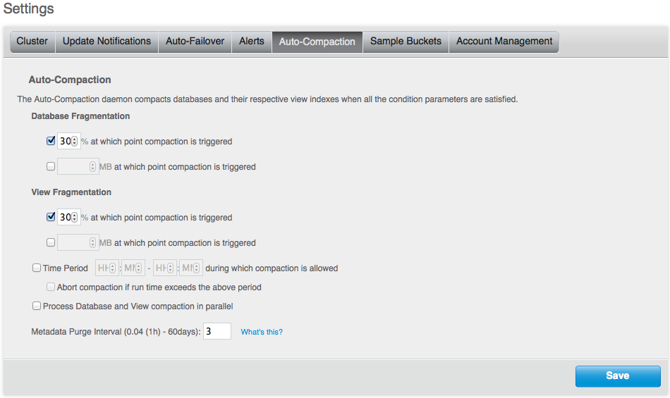

Auto-Compaction tab
The Auto-Compaction tab configures the default auto-compaction settings for all the databases. These can be overridden using per-bucket settings available when creating or editing data buckets. You can provide a purge interval to remove the key and metadata for items that have been deleted or are expired. This is known as ‘tombstone purging’.
The Auto-Compaction tab sets the following default parameters:
| Parameter | Description |
|---|---|
| Database Fragmentation | If checked, you must specify either the percentage of fragmentation at which database compaction will be triggered, or the database size at which compaction will be triggered. You can also configure both trigger parameters. |
| View Fragmentation | If checked, you must specify either the percentage of fragmentation at which database compaction will be triggered, or the view size at which compaction will be triggered. You can also configure both trigger parameters. |
| Time Period | If checked, you must specify the start hour and minute, and end hour and minute of the time period when compaction is allowed to occur. |
| Abort if run time exceeds the above period | If checked, if database compaction is running when the configured time period ends, the compaction process will be terminated. |
| Process Database and View compaction in parallel | If enabled, database and view compaction will be executed simultaneously, implying a heavier processing and disk I/O load during the compaction process. |
| Metadata Purge Interval |
Defaults to three days. Tombstones are records of expired or deleted items and they include the key and metadata. Tombstones are used in Couchbase Server to provide eventual consistency of data between clusters. The auto-compaction process waits this number of days before it permanently deletes tombstones for expired or deleted items. If you set this value too low, you may see more inconsistent results in views queries such as deleted items in a result set. You may also see inconsistent items in clusters with XDCR set up between the clusters. If you set this value too high, it will delay the server from reclaiming disk space. |